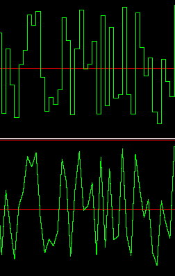
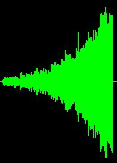
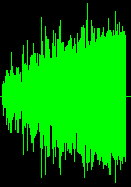
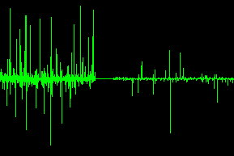

Departments

Noise, Beautiful Noise
Hans Mikelson
Introduction
Most people spend a great deal of time and effort trying to get rid of noise. Why would you want to create it? Noise is a useful starting point for many types of sound synthesis from simple subtractive synthesis to digital waveguides.
In the study of sound noise takes on some special meanings. Many terms are used to describe different types of noise. White noise, pink noise, brown noise, red noise, black noise and many more. This article will describe some of Csound's common noise generators.
Generating noise
Noise and random numbers are closely related. If you generate a sequence of random numbers and play it back as sound you will hear noise. The most common way of generating noise in Csound is by using the rand opcode. The rand opcode generates a uniform distribution of random numbers. The term uniform distribution means that any number in the selected range is equally likely to occur. This is also the definition of white noise. The following Csound code can be used to generate white noise.
asig rand 30000
outs asig, asig
This will generate random numbers between -30000 and +30000. Any number in this range is equally likely to occur.
Csound's original random number generator was based on 16 bits which resulted in a noticeably repeating cycle. So the noise did not always sound very random. If a non zero number is used for the third parameter then a high quality 31 bit random number is generated with an extremely long repeat cycle. Unfortunately a one sided or unipolar signal is generated in 31 bit mode so that the following code
asig rand iamp, .5, 1
would generate random numbers between 0 and iamp. To make the signal bipolar you must multiply by two and subtract iamp.
asig = asig*2 - iamp
Sample and hold
The opcodes randh and randi are closely related to rand. The randh opcode generates a random number and holds that value for a specified length of time. This type of signal is usually called a sample and hold signal. The randi opcode generates a straight line connecting the random numbers instead of jumping between them as in randh. The following figure illustrates the difference between randh and randi:
 Figure 1. Noise generated by randh (top) and randi (bottom).
Pink noise
One complaint about white noise is that it tends to emphasize high frequencies. There is the same energy between 100 and 200 Hz as there is between 1000 and 1100 Hz.
A type of noise that sounds a little nicer is called pink noise. Pink noise has equal energy per octave so that there is the same energy between 100 and 200 Hz as there is between 1000 and 2000 Hz. One of the easiest ways to approximate pink noise is to add together a series of sample and hold signals whose frequencies are related by factors of two.
asig1 rand iamp, .5, 1 ; High quality random number asig2 randh iamp, sr/2, .5, 1 ; Hold random number for 2 samples asig3 randh iamp, sr/4, .5, 1 ; Hold for 4 samples asig4 randh iamp, sr/8, .5, 1 ; Hold for 8 samples asig5 randh iamp, sr/16, .5, 1 ; Hold for 16 samples asig6 randh iamp, sr/32, .5, 1 ; Hold for 32 samples asig7 randh iamp, sr/64, .5, 1 ; Hold for 64 samples asig8 randh iamp, sr/128, .5, 1 ; Hold for 128 samples asig = (asig1+asig2+asig3+asig4+asig5+asig6+asig7+asig8-4*iamp)/3
In this case I add eight signals together. The first signal is a high quality white noise signal. The second signal, asig2, is generated by randh. In this case it generates a new random number every other sample. The third signal generates a new random number every four samples, the fourth every eight samples and so on. Finally all of the signals are added together. A constant factor of four times the amplitude must be subtracted because Csound's 31 bit random number generator only generates positive numbers.
The difference between white noise and pink noise can be observed by sweeping the signals with a band pass filter.
aflt butbp asig, kfqc, kfqc*.1
As the filter center frequency increases the amplitude of the filtered white noise signal increases.
 Figure 2. Filtered white noise as the center frequency is swept from 40 hz on the left to 10000 hz on the right.
Sweeping pink noise with a band pass filter yields a much flatter response.
 Figure 3. Filtered pink noise as the center frequency is swept from 40 hz on the left to 10000 hz on the right.
The high frequencies are still somewhat stronger than the very low frequencies. Adding more randh signals may help make the response flatter although I think this instrument already sounds quite good.
Cauchy Noise
Csound also includes a variety of nonuniform noise generators. The second part of the score generates noise using the cauchy opcode.
asig cauchy ialpha
The parameter ialpha controls the distribution of the sound. The smaller alpha is the more tightly the distribution is clustered around zero.
 Figure 4. Cauchy noise: alpha=1 (left) alpha=.1 (right)
Cauchy noise is useful for generating static like sound effects.
Conclusion
I have presented a brief description of some of Csound's many noise generating opcodes. Noise is usually not used by itself but instead is filtered with a band pass or resonant filter. Noise can be used as a modulation source to modify pitch or filter cut-off frequencies. It can be used to add a natural quality to otherwise sterile digital sounds.
Links
DSP Generation of Pink Noise by Robin Whittle http://www.firstpr.com.au/dsp/pink-noise/
Bibliography on 1/f Noise http://linkage.rockefeller.edu/wli/1fnoise/
Computer Generated Random Numbers http://world.std.com/~franl/crypto/random-numbers.html